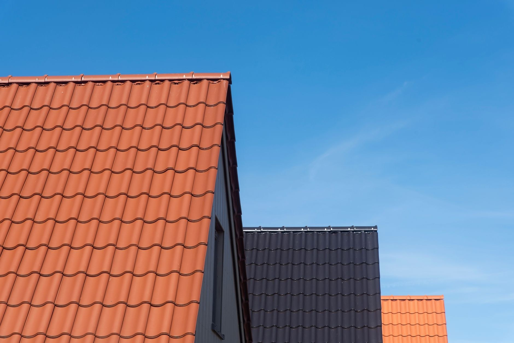
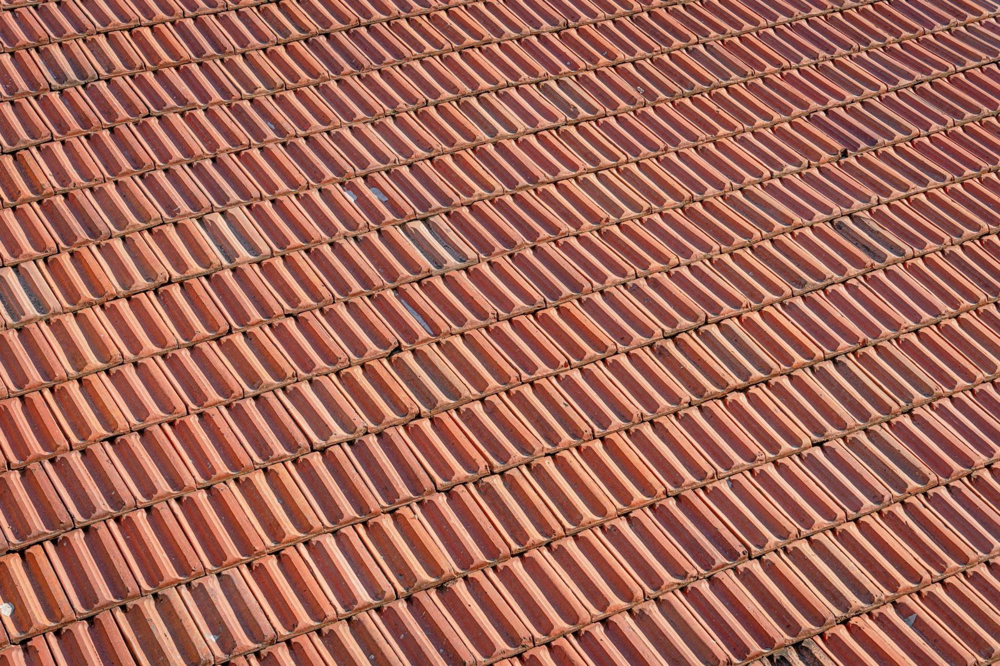
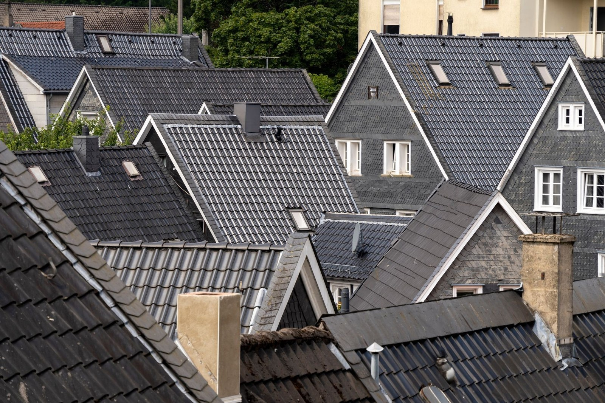
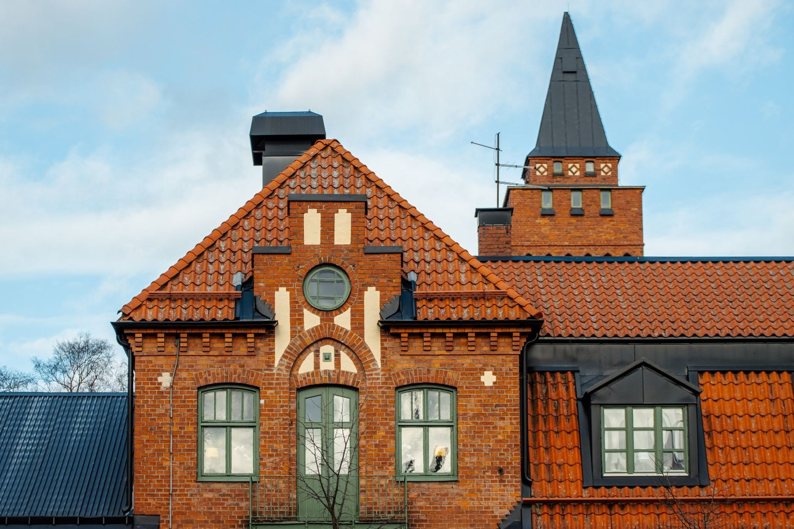
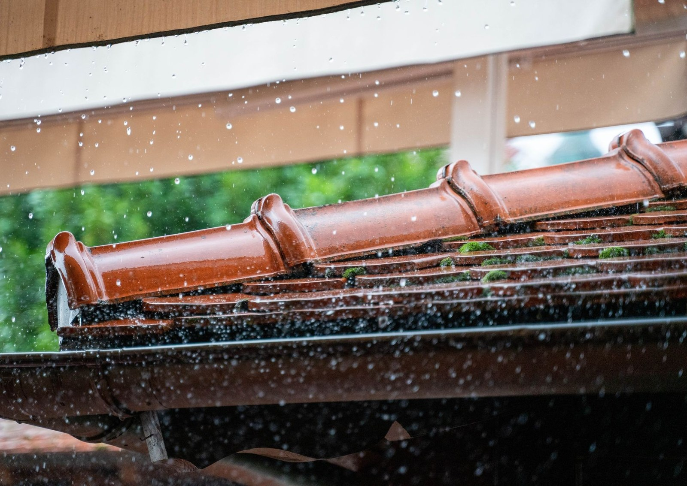

Pracuję w Jeleniej Górze i do 40 km wokół. Zadzwoń, powiedz co się dzieje z dachem, a umówimy pomiar na konkretny dzień.
Umów pomiar +48 661 383 983Prosty, przewidywalny proces. Bez niespodzianek i bez naciągania.
Telefon albo zdjęcie dachu. Po krótkiej rozmowie wiesz, czy przyjadę obejrzeć i w jakim terminie.
Wchodzę na dach, mierzę i robię zdjęcia. Wycenę dostajesz na piśmie, rozbitą na pozycje - materiał osobno, robota osobno.
Materiał zamawiam po zatwierdzeniu wyceny i pilnuję dostawy. Z Twojego dachu schodzę dopiero, jak jest skończony - nie w połowie na inną budowę.
Stare pokrycie jedzie na kontener, a Ty dostajesz gwarancję na robociznę - jak coś nie gra, wracam i poprawiam.
Zakres prac, jaki robię najczęściej - pełny opis i wycenę znajdziesz niżej.
Każdy z tych dachów ma pod sobą czyjś dom. Pokrycia, więźby, obróbki - bez upiększania.





Robię głównie Jelenia Góra i okolice do 40 km: Karpacz, Kowary, Piechowice i Szklarska Poręba. Przy całym dachu podjadę dalej - zadzwoń, zwykle da się dograć.
Najwięcej robi pokrycie i skomplikowanie bryły - dwa kominy i trzy lukarny to inna robota niż prosta dwuspadówka. Dlatego wyceniam dopiero po wejściu na dach, za to na piśmie.
Nie. Pomiar i wycena w Jeleniej Górze i najbliższej okolicy są bezpłatne i do niczego nie zobowiązują.
Typowy dom to zwykle tydzień, dwa - zależnie od pokrycia i pogody. Termin i czas roboty znasz przed startem, a o przesunięciu przez pogodę mówię od razu, nie po fakcie.
Rozbiórka i wywóz są w wycenie, chyba że umówimy się inaczej. Stary eternit oddaję firmie z uprawnieniami do azbestu - tego nie wolno wywieźć byle gdzie i nie ma co ryzykować.
Tak, na firmę albo prywatnie. Kwoty na fakturze zgadzają się z wyceną - żadnych pozycji dopisanych na koniec.
Wracam i sprawdzam, gdzie puściło. Moja robota - poprawiam za darmo; przyczyna gdzie indziej - pokazuję zdjęcia i mówię, co z tym zrobić.
Zadzwoń lub napisz - przyjadę, obejrzę i podam jasną cenę. Bez zobowiązań.